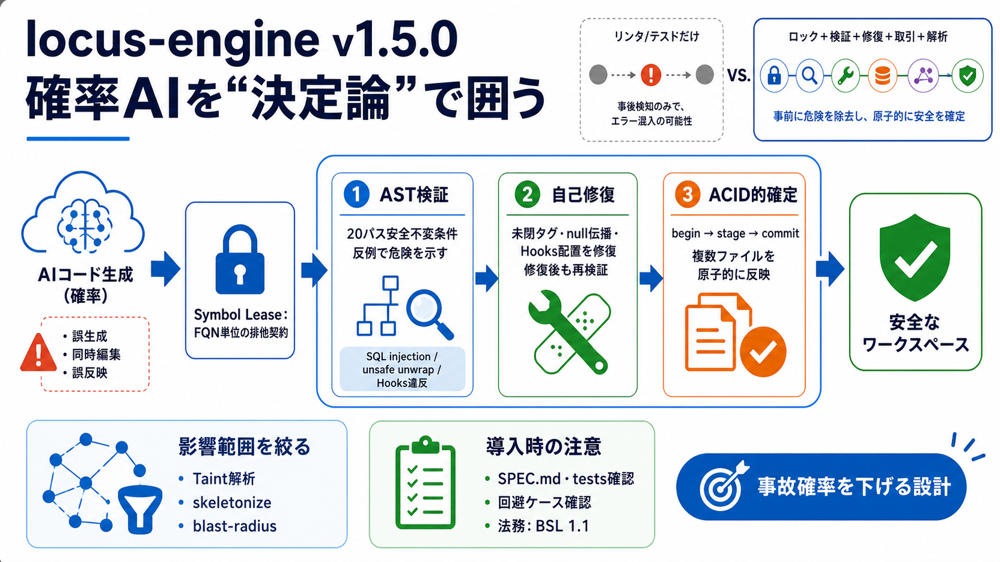

LOCUS/SPEC.md at main · ahmadshady747-create ... - GitHub
locus-engine is a high-speed systems engine written in 100% safe Rust ( zero unsafe blocks ). It provides:.

React Hooksの規則違反、unsafe unwrap、nullチェーンなど
複数同時編集の衝突、複数ファイルの誤反映、ディスク/ワークスペースのドリフト
Fully Qualified Symbol Name（FQN）
TTL付き排他ロック（lease）
acquire_symbol_lease 等
20パスのAST安全不変条件（check_safety）
未閉タグ、nullチェーン、Hooks違反など（auto_remediate）
ACIDライクなワークスペース取引（begin_tx/stage_tx/commit_tx）
SQLインジェクション、危険な unwrap、危険な動的実行、Hooks規則違反
決定論的・高速（目標：低遅延）
※ただしベンチ条件はSPEC/テスト確認が必要
未閉タグ（構文を成立させる） / nullチェーン / Hooks持ち上げ
修復“後”も検証を通す前提（verified_patch/取引コミット）
begin_tx → stage_tx → commit_tx
ディスク破損・半端な書き込み・検証漏れの連鎖を抑える
未検証入力の追跡（cross-file污染の抑制）
skeletonize：全投げを避ける
blast-radius：不要な修正を減らす
ビルド/テストだけ、またはリンタだけ
AST検証（反例志向）＋自己修復＋ACID的確定＋シンボル排他
20パスが“全て”を保証するとは限らない（SPEC/テストで確認）
誤修復で意味が変わる可能性はゼロではない（verified_patch/契約検証の程度確認）
量子化HNSW＋レキシカルのハイブリッド検索、インクリメンタルCST再解析
WASMブリッジ（ブラウザIDE向け）
locus-engine is a high-speed systems engine written in 100% safe Rust ( zero unsafe blocks ). It provides:.
Locus and its licensors make no representation, warranty, or guaranty as to the reliability, timeliness, quality, suitab…
Logistics and supply chain enterprises encounter some critical day-to-day business challenges. Some of these challenges …
Introduction. Your use of Locus Limited's website (the “Website”) and all related content, including but not limited to …
THE SOFTWARE IS PROVIDED "AS IS", WITHOUT WARRANTY OF ANY KIND, EXPRESS OR IMPLIED, INCLUDING BUT NOT LIMITED TO THE WAR…